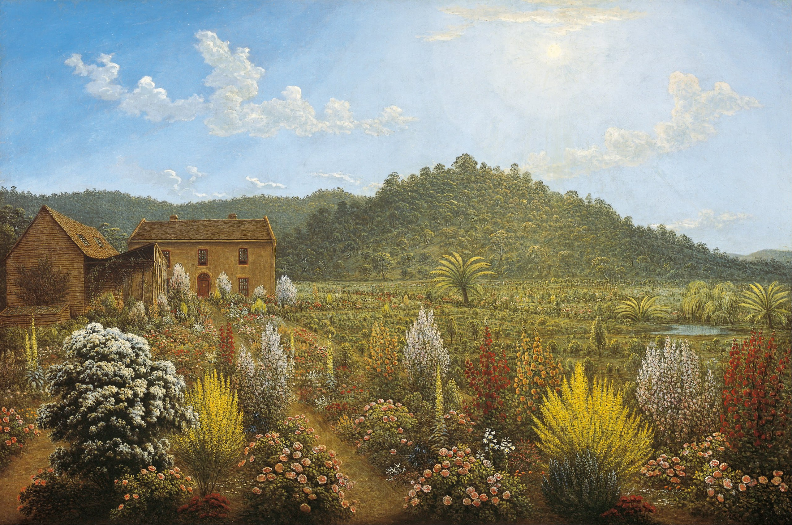

Джон Гловер
A view of the artist's house and garden, in Mills Plains, Van Diemen's Land (Вид на дом и сад художника в Миллс-Плейнс, Земля Ван-Димена), 1835

Холст, масло, 76,4 x 114,4 см
Художественная галерея Южной Австралии, Аделаида.
История картины
- После успешной карьеры художника в Англии и накануне своего отъезда в Австралию в 1831 году Джон Гловер с нетерпением ждал начала своей новой жизни на другом конце света, отметив, что: "Ожидание найти новый прекрасный мир — новые пейзажи, новые деревья, новые цветы, новых животных, птиц и т. д. — вызывают у меня восхищение’.
- На картине "Вид на дом и сад художника" мы видим, что художник быстро освоился в новом мире, однако он никогда полностью не расставался со своей далёкой родиной. Сцена представляет собой выразительное сочетание двух представлений о месте. В недавно построенном доме и студии Гловера в Деддингтоне, на севере Тасмании, демонстрируется его точная копия английского сада - ностальгическая отсылка к другому представлению о "доме", как и везде. И всё же, залитая ярким летним солнцем, эта ферма излучает оптимизм, комфорт и успех. Гордый своими достижениями в Южном полушарии, Гловер выставил эту картину на выставке в Лондоне вскоре после того, как она была написана. Дом, названный Паттердейл, сохранился до наших дней.